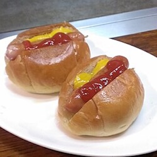

Not Hotdog
Home

Description
The "Not Hot Dog" reimagines the cookout experience for vegans and vegetarians without relying on heavily processed meat alternatives. Whole, peeled carrots are trimmed to fit standard buns and boiled until just tender before taking a deep dive into a marinade of soy sauce, liquid smoke, garlic, and maple syrup. When grilled, the natural sugars in the carrot caramelize alongside the absorbed smoky flavors, creating a surprisingly meaty texture and a deeply savory flavor profile that pairs beautifully with traditional toppings.
Ingredients
- 4 medium, straight carrots (peeled and ends trimmed to bun length)
- 4 hot dog buns
- 1/4 cup soy sauce or tamari
- 1/4 cup water
- 1 tbsp maple syrup
- 1 tsp liquid smoke
- 1/2 tsp garlic powder
- 1/2 tsp smoked paprika
- 1 tbsp olive oil (for grilling)
Steps
- 1.Parboil the carrots:8-10 mins. Bring a pot of water to a boil. Cook the peeled carrots until they are tender enough to pierce with a fork, but still firm enough to hold their shape. Drain and rinse with cold water.
- 2.Marinate:30+ mins. Whisk together the soy sauce, water, maple syrup, liquid smoke, garlic powder, and smoked paprika in a shallow dish or zip-top bag. Add the carrots and let them soak for at least 30 minutes (or overnight for maximum flavor).
- 3.Char and caramelize:6-8 mins. Heat a grill or skillet over medium heat and brush lightly with olive oil. Remove the carrots from the marinade and grill them, turning frequently, until they develop dark grill marks and a glossy glaze.
- 4.Assemble:1 min. Tuck your grilled carrot "dogs" into warm buns and top with your favorite condiments, such as vegan mayo, mustard, or avocado.